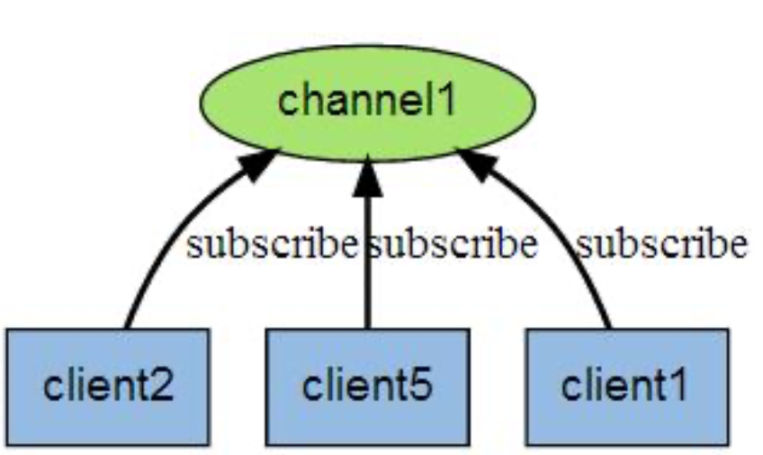
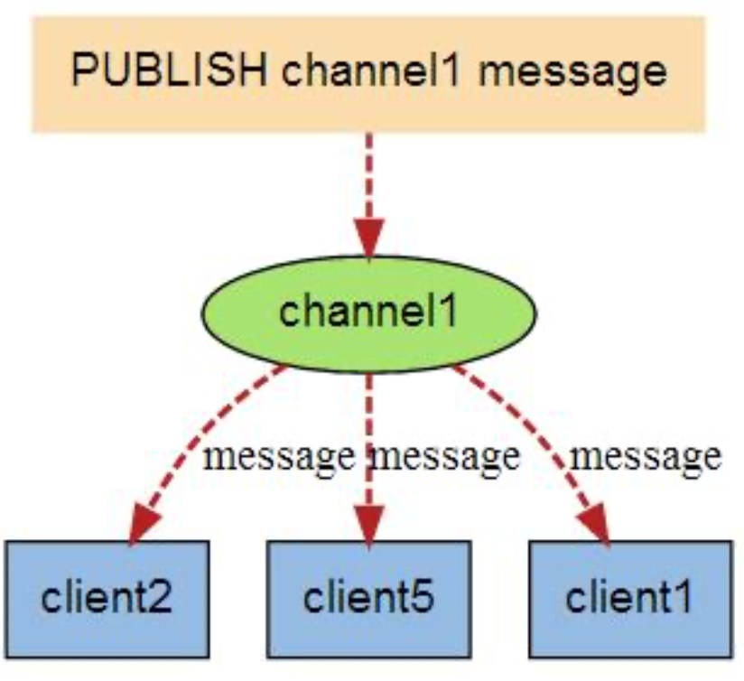

hello-redis
Redis （REmote DIctionary Server）
- Redis 是一个支持请求/响应协议的TCP服务器。
- Redis是一个开源的高级键值数据存储和缓存。它也被称为数据结构服务器，其键不仅包含字符串，还包含哈希，集合，列表和有序集。
启动 Redis 服务
1 | brew start redis-server |
远程连接 Redis
1 | redis-cli -h host -p port -a password |
| 参数 | 描述 |
|---|---|
检测是否连接成功
1 | redis 127.0.0.1:6379> PING |
Redis keys 命令
| 命令 | 描述 |
|---|---|
| DEL key | 该命令用于在 key 存在时删除 key。 |
| DUMP key | 序列化给定 key ，并返回被序列化的值。 |
| EXISTS key | 检查给定 key 是否存在。 |
| EXPIRE key seconds | 为给定 key 设置过期时间，以秒计。 |
| EXPIREAT key timestamp | EXPIREAT 的作用和 EXPIRE 类似，都用于为 key 设置过期时间。 不同在于 EXPIREAT 命令接受的时间参数是 UNIX 时间戳(unix timestamp)。 |
| PEXPIRE key milliseconds | 设置 key 的过期时间以毫秒计。 |
| PEXPIREAT key milliseconds-timestamp | 设置 key 过期时间的时间戳(unix timestamp) 以毫秒计 |
| KEYS pattern | 查找所有符合给定模式( pattern)的 key 。 |
| MOVE key db | 将当前数据库的 key 移动到给定的数据库 db 当中。 |
| PERSIST key | 移除 key 的过期时间，key 将持久保持。 |
| PTTL key | 以毫秒为单位返回 key 的剩余的过期时间。 |
| TTL key | 以秒为单位，返回给定 key 的剩余生存时间(TTL, time to live)。 |
| RANDOMKEY | 从当前数据库中随机返回一个 key 。 |
| RENAME key newkey | 修改 key 的名称 |
| RENAMENX key newkey | 仅当 newkey 不存在时，将 key 改名为 newkey 。 |
| TYPE key | 返回 key 所储存的值的类型。 |
Redis 数据类型
- 字符串（string）
- 哈希（hash）
- 列表（list）
- 集合（set）
- 有序集合（sorted set）
Redis 事务
- 事务中的所有命令都作为一个隔离操作顺序执行。您无法在执行
Redis事务期间由另一个客户端发出请求。 Redis事务是原子的。原子意味着要么执行所有命令，要么任何命令都不执行。
Redis 事务命令
| 命令 | 描述 |
|---|---|
| MULTI | 标记一个事务块的开始。 |
| EXEC | 执行所有事务块内的命令。 |
| DISCARD | 取消事务，放弃执行事务块内的所有命令。 |
| WATCH key [key …] | 监视一个(或多个) key ，如果在事务执行之前这个(或这些) key 被其他命令所改动，那么事务将被打断。 |
| UNWATCH | 取消 WATCH 命令对所有 key 的监视。 |
Redis连接命令
| 命令 | 描述 |
|---|---|
| PING | 检查服务器是否正在运行。 |
| QUIT | 关闭当前连接。 |
| AUTH password | 使用给定密码对服务器进行身份验证。 |
| ECHO message | 打印给定的字符串。 |
| SELECT index | 更改当前连接的选定数据库。 |
redis安全
设置密码
1 | config set requirepass "redis123" |
验证密码
1 | AUTH redis123 |
验证实例密码
1 | config get requirepass |
Redis 分区
- 范围分区
- 哈希分区
范围分区
- 范围分区是执行分区的最简单方法之一。它通过将对象的范围映射到特定的Redis实例来完成。
- 假设您有3000个用户。因此，您可以说从ID 0到ID 1000的用户将进入实例R0，而用户表单ID 1001到ID 2000将进入实例R1，用户表单ID 2001到ID 3000将进入实例R2，依此类推。
哈希分区
- 散列分区是Range分区的替代方法。在散列分区中，散列函数用于将密钥转换为数字，然后将数据存储在不同的Redis实例中。
通用方法
- expire keyName 设置过期时间
- type keyName 查看类型
- del keyName 删除指定 key
- flushall [string,list] 删除全部
数组方法
- 设置 值
- rpush 尾部追加
- lpush 头部插入
1 | rpush listName value |
- 获取 值
- 0 开始下标
- -1 查询全部
1 | lrange listName statrIndex ednIndex |
- 删除 值
- rpop 尾部删除
- lpop 头部删除
1 | rpop listName |
集合（ set 类型的列表） 方法
- 设置 值
1 | sadd key name |
- 获取 值
1 | smembers key |
- 删除 值
1 | srem key value |
哈希
- 设置 值
- hmset 一次设置多个 值
- hset 这是单个 值
1 | hmset key value key value |
- 获取 值
1 | hgetall key |
发布（pub）与订阅（sub）
- Redis 发布订阅(pub/sub)是一种消息通信模式:发送者(pub)发送消息，订阅者(sub)接收消息。
- Redis 客户端可以订阅任意数量的频道。

- 当有新消息通过 PUBLISH 命令发送给频道 channel1 时， 这个消息就会被发送给订阅它的三个客 户端:

- 发布
1 | client.publish('testPublish', 'message from publish.js'); |
- 订阅
- 监听同一个 redis 服务器 可以直接 发布-监听
- 一个 程序可以
发布多个消息，也可以监听多个消息
1 | client.subscribe('testPublish'); |
node 中使用 redis
- 连接 redis
1 | const redis = require('redis'); |
- string
1 | // 设置 |
- list
1 | // 设置 |
- set
1 | // 设置 |
- 哈希（对象）
1 | // 设置 单条 |
感谢您的阅读，本文由 cheng 版权所有。如若转载，请注明出处：cheng（https://18600917746.github.io/2019/11/24/hello-redis/）